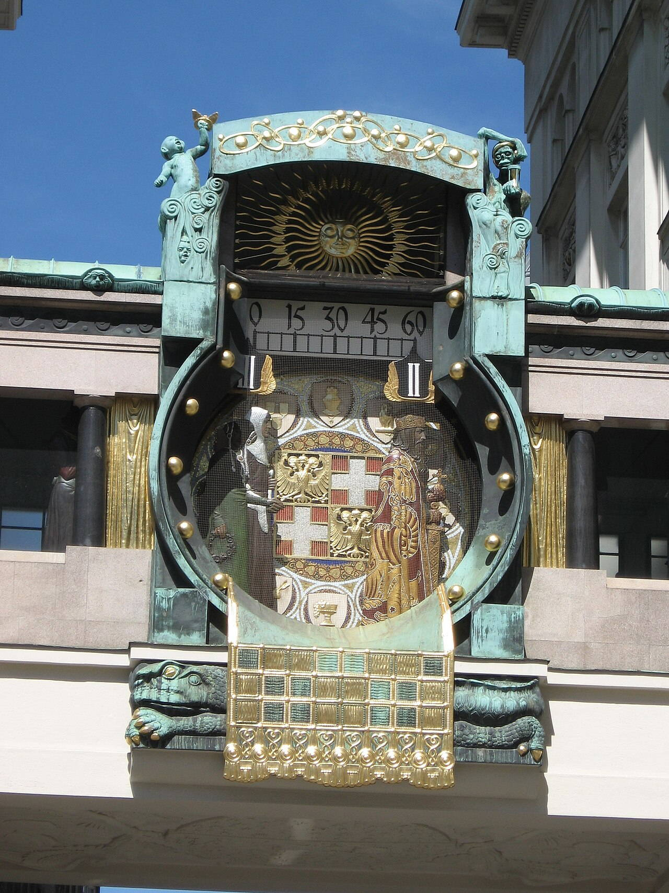
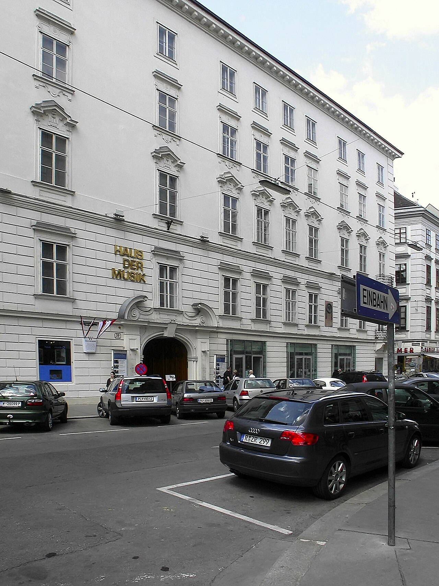
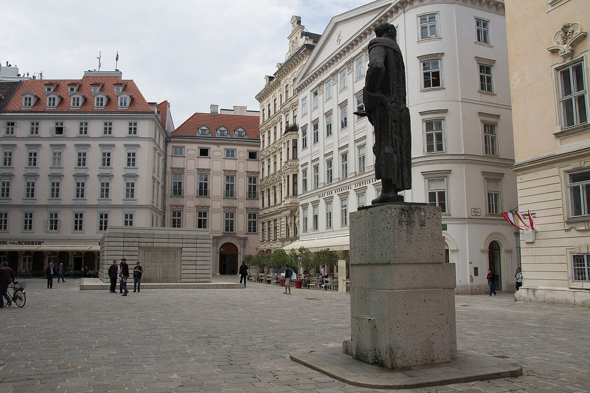
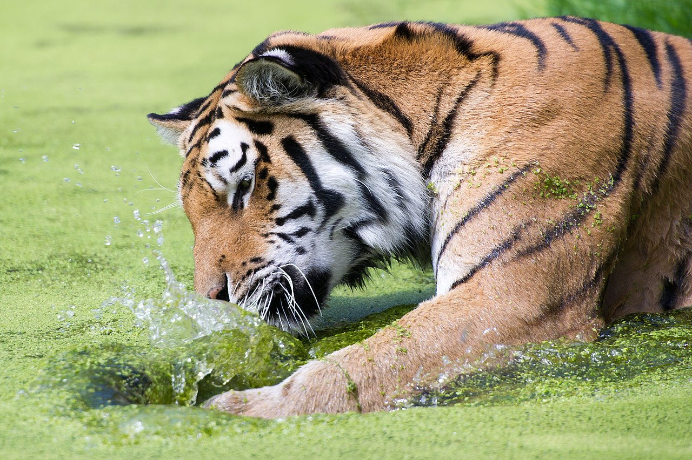
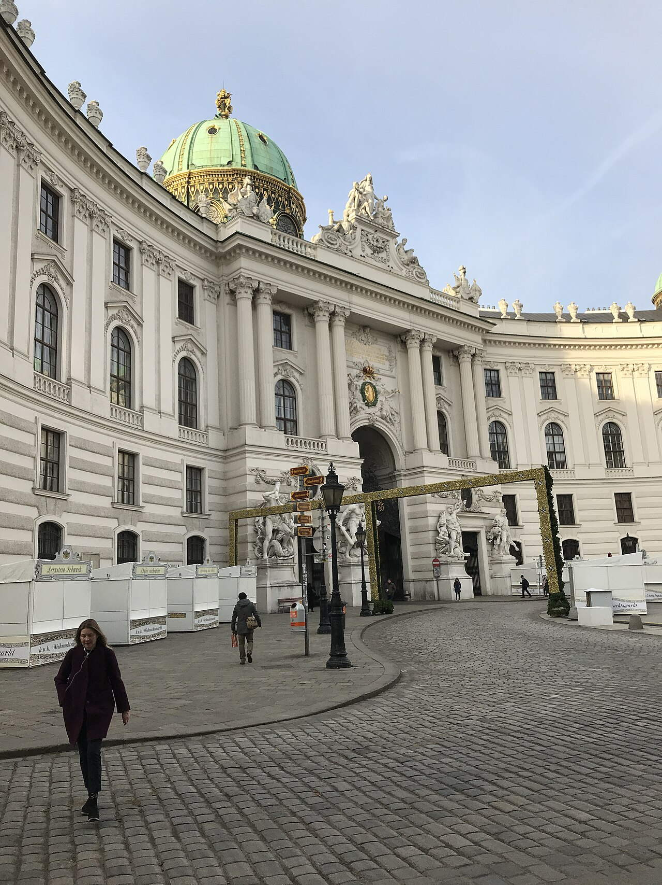
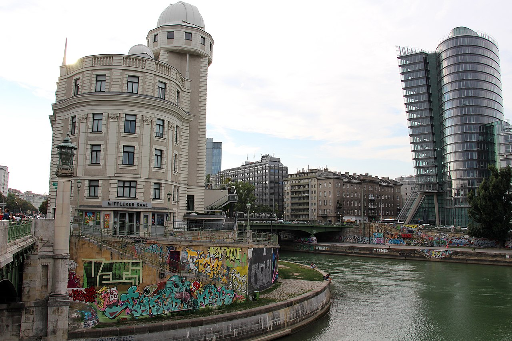
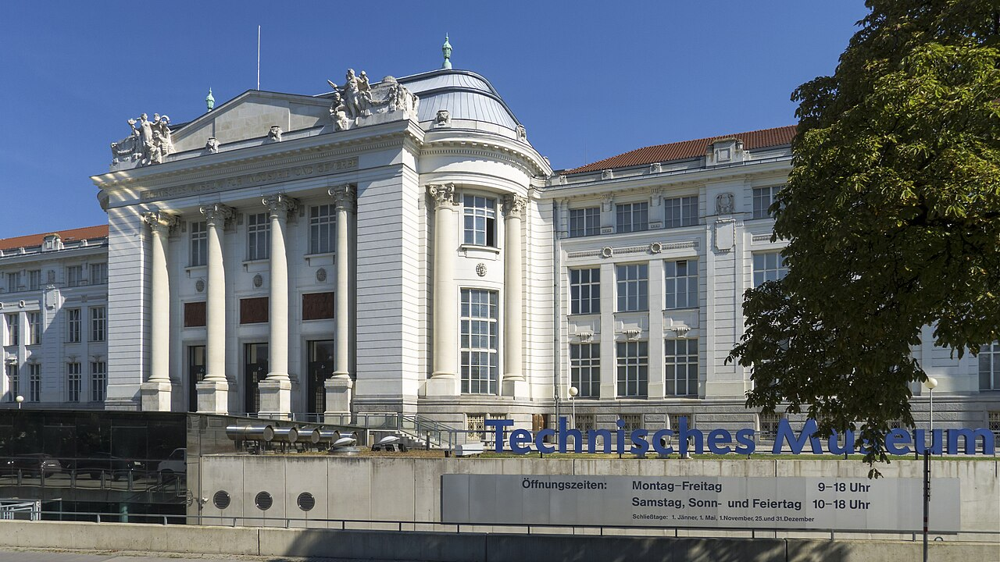

OTIUM OTIUM is the practice of deliberate leisure. In the classical sense, otium is not escape from work but time when attention returns to memory, landscape, and thought — without a utilitarian deadline.
We shape routes for lingering, not for checklist tourism. The goal is presence in a place rather than consumption of sights.
OTIUM is not a tour operator. It is an invitation to walk, pause, and leave a route unfinished if the light on a façade deserves another minute.
Albertina
Albertina Museum
Address: Albertinaplatz 1, 1010 Wien | Style: Habsburg palace with modern galleries
Facts and details
Print rooms and graphic collections among the world's largest.
State rooms overlook the opera roofline. History
Named for Duke Albert of Saxe-Teschen; expanded as a public museum.
Significance
Bridge between imperial residence layers and modern art shows.
Ankeruhr
Hoher Markt
Address: Hoher Markt 10–11, 1010 Wien | Style: Jugendstil clock bridge, 1914

Facts and details
Twelve noon parade of historical figures across the dial.
Commissioned by the Anker insurance company. History
Franz Matsch design linking two buildings over the market.
Significance
Beloved Old Town clock-watching ritual.
Austrian Parliament
Parlament
Address: Dr.-Karl-Renner-Ring 3, 1010 Wien | Style: Greek Revival, Theophil Hansen, 1883
Facts and details
Athena fountain fronts the ramp to the portico.
Seat of the Nationalrat and Bundesrat. History
Built to embody democratic ideals of the 1867 constitution era.
Significance
Political heart of the Republic on the Ringstraße.
Belvedere
Oberes Belvedere
Address: Prinz-Eugen-Straße 27, 1030 Wien | Style: Baroque palace pair, Lukas von Hildebrandt
Facts and details
Upper Belvedere holds Klimt's The Kiss and major Austrian collections.
Linked by formal cascade gardens. History
Built for Prince Eugene of Savoy as a garden villa ensemble.
Significance
Art museum campus and Baroque landmark facing the city center.
Church of St. Rupert
Ruprechtskirche
Address: Ruprechtsplatz, 1010 Wien | Style: Romanesque church, 12th–13th c.
Facts and details
Often cited as Vienna's oldest church building fabric.
Named for Salzburg's patron St. Rupert. History
Stood near Danube landing before river regulation moved the shore.
Significance
Quiet Romanesque contrast to Baroque domes nearby.
Danube Tower
Donauturm
Address: Donauturmstraße 8, 1220 Wien | Style: Concrete TV tower, 1964
Facts and details
252 m height with revolving café and viewing deck.
Built for the 1964 international garden show on new Danube islands. History
Symbol of postwar modern Vienna's Danube reclamation projects.
Significance
Panorama over city, river, and hills from the northeast.
Hofburg
Hofburg — Neue Burg
Address: Michaelerkuppel, 1010 Wien | Style: Medieval to 19th-c. palace wings
Facts and details
Seat of Habsburg power for centuries; now president's offices and museums.
Includes Spanish Riding School stables, chapels, and libraries. History
Grew from medieval castle into a city-sized palace over dynastic reigns.
Significance
Geographic and symbolic center of historic Vienna.
House of Music Vienna
Haus der Musik
Address: Seilerstätte 30, 1010 Wien | Style: Historic palace with interactive galleries

Facts and details
Hands-on sound physics and Vienna Philharmonic storylines.
Housed in the former Archduke Charles palace. History
Opened 2000 as a high-tech complement to traditional concert life.
Significance
Family-friendly introduction to acoustics and composers.
Hundertwasserhaus
Hundertwasserhaus Wien
Address: Kegelgasse 34–38, 1030 Wien | Style: Expressionist housing, Hundertwasser, 1985
Facts and details
Undulating floors, tree tenants, and polychrome façade.
Adjacent village has cafés and Hundertwasser exhibits. History
Municipal housing project co-designed with architect Josef Krawina as an artistic statement.
Significance
Most photographed alternative architecture stop in Vienna.
Judenplatz Holocaust Memorial
Nameless Library
Address: Judenplatz, 1010 Wien | Style: Rachel Whiteread concrete library, 2000

Facts and details
Names of Austrian Holocaust victims inscribed on surrounding walls.
Stands over medieval synagogue ruins visible underground. History
Commemorates the 1421 Vienna Gesera and 20th-century Shoah.
Significance
Quiet counterpoint to café life on the old Jewish square.
Karlskirche
Karlskirche, Karlsplatz
Address: Karlsplatz, 1040 Wien | Style: Baroque church, Fischer von Erlach, 1716+
Facts and details
Votive church for plague relief; twin columns echo Trajan's Column.
Lift to dome fresco viewing available seasonally. History
Commissioned by Charles VI after the 1713 plague vow; completed by son Joseph.
Significance
Dominant Karlsplatz landmark between Ring and Naschmarkt.
Kunsthistorisches Museum
KHM, Maria-Theresien-Platz
Address: Maria-Theresien-Platz, 1010 Wien | Style: Historicist palace museum, 1891
Facts and details
Habsburg painting collections including Bruegel masterworks.
Grand staircase and dome interiors match the Naturhistorisches twin. History
Opened with the twin museum to display imperial art and Wunderkammer legacies.
Significance
One of Europe's great old-master museums.
Maria Theresa Memorial
Maria-Theresien-Denkmal
Address: Maria-Theresien-Platz, 1010 Wien | Style: Monumental empress monument, 1888
Facts and details
Honors Maria Theresa surrounded by advisors and children in relief.
Frames the twin museum façades photographically. History
Erected long after her reign as Habsburg nostalgia peaked.
Significance
Central pivot of the Museum Quarter approach from the Ring.
Mozarthaus Vienna
Domgasse 5
Address: Domgasse 5, 1010 Wien | Style: Baroque apartment house, 17th c.
Facts and details
Mozart family lived here 1784–1787 composing The Marriage of Figaro period works.
Museum recreates period rooms and listening stations. History
Only surviving Mozart residence in Vienna open to the public.
Significance
Compact music-history site steps from Stephansdom.
MuseumsQuartier
MuseumsQuartier Wien
Address: Museumsplatz 1, 1070 Wien | Style: Baroque stables + modern white cubes
Facts and details
Leopold Museum, MUMOK, Tanzquartier, and courtyard lounges.
Former imperial court stables repurposed as culture campus. History
Major 1990s–2000s conversion project opening baroque walls to contemporary use.
Significance
Youthful nightlife and museum block west of the Ring.
Naschmarkt
Wiener Naschmarkt
Address: Linke Wienzeile, 1040 / 1060 Wien | Style: Open-air market along Wienzeile
Facts and details
Over 100 stalls of produce, spices, and street food.
Saturday flea market extends west along the channel. History
Grew from 18th-c. milk market into Vienna's largest food bazaar.
Significance
Everyday shopping and tourist tasting strip near the center.
Natural History Museum
Naturhistorisches Museum Wien
Address: Burgring 7, 1010 Wien | Style: Historicist palace museum, 1881–1891
Facts and details
Mirror twin across Maria-Theresien-Platz to the art history museum.
Famous for meteorites, dinosaurs, and the Venus of Willendorf. History
Built under Franz Joseph to house imperial natural science collections.
Significance
Grand interior halls make it a destination beyond specimens.
Prater Hauptallee
Hauptallee, Wiener Prater
Address: Prater, 1020 Wien | Style: Allée landscape, 19th c.
Facts and details
Former imperial hunting ground opened to public in 1766.
Six km straight popular with runners and cyclists. History
Hauptallee formalized for court rides; fairgrounds grew at the southern end.
Significance
Green lung and carnival zone east of the inner city.
Schönbrunn Palace
Schloss Schönbrunn
Address: Schönbrunner Schloßstraße 47, 1130 Wien | Style: Baroque palace and gardens, 18th c.
Facts and details
1,441-room summer residence of the Habsburgs; UNESCO site.
Gloriette overlooks formal parterres and the city. History
Site evolved from hunting lodge to imperial showpiece under Maria Theresa and successors.
Significance
Vienna's most visited palace complex with zoo and gardens.
Schönbrunn Zoo
Tiergarten Schönbrunn
Address: Maxingstraße 13b, 1130 Wien | Style: Zoological garden, 1752 founding

Facts and details
World's oldest continuously operating zoo in baroque pavilions.
Breeding programs for giant pandas and rare species. History
Imperial menagerie opened to the public under Franz Stephan and Maria Theresa.
Significance
Major family day on the Schönbrunn palace grounds.
Sigmund Freud Memorial
Freud-Denkmal, Freud Park
Address: Berggasse 19, 1090 Wien | Style: Biedermeier apartment house marker
Facts and details
Freud lived and worked here 1891–1938 before exile.
Museum in the building interprets psychoanalysis history. History
Site of the famous consulting room, recreated with original furniture in London but memorialized here.
Significance
Pilgrimage address for intellectual history tourists.
Spanish Riding School
Spanische Hofreitschule
Address: Michaelerplatz 1, 1010 Wien (Hofburg) | Style: Baroque riding hall, 1735
Facts and details
Classical dressage of Lipizzaner stallions.
Morning exercises and gala performances by ticket. History
Habsburg court tradition continuing as a living institution.
Significance
Unique blend of equestrian art and palace architecture.
Spanish Riding School façade
Hofburg
Address: Michaelerplatz, Hofburg, 1010 Wien | Style: Baroque Michaelertrakt courtyard

Facts and details
Ceremonial entry sequence toward the riding hall.
Imperial double eagle motifs on gates. History
Part of the Hofburg's late imperial expansion facing the Michaelerplatz.
Significance
Classic postcard view of court architecture and horses.
St. Stephen's Cathedral
Stephansdom
Address: Stephansplatz 3, 1010 Wien | Style: Gothic cathedral, 14th–16th c.
Facts and details
South tower “Steffl” dominates the skyline; tiled roof with Habsburg eagle.
Burial place of dukes, bishops, and national heroes. History
Built on earlier churches; spire and nave completed across late medieval campaigns.
Significance
Mother church of the Roman Catholic Archdiocese of Vienna.
Stadtpark
Stadtpark Wien
Address: Parkring, 1010 / 1030 Wien | Style: English landscape park, 1862
Facts and details
Gilded Johann Strauss monument is a photo staple.
Wien River channelled underground through the park. History
Ringstraße-era public park replacing fortifications belt.
Significance
Everyday green space between Karlsplatz and the canal.
Stephansplatz
Stephansplatz, Innere Stadt
Address: 1010 Wien, around Stephansdom | Style: Medieval-to-modern urban square
Facts and details
U-Bahn interchange under the cathedral's shadow.
Pedestrian shopping radiates along Kärntner Straße and Graben. History
Market and execution site in the Middle Ages; rebuilt after WWII.
Significance
Default zero point for visitors orienting in the old town.
Urania Observatory
Urania
Address: Uraniastraße 1, 1010 Wien | Style: Art Nouveau observatory and lecture hall

Facts and details
Public astronomy programs and riverside café terrace.
UNIQA Tower neighbors as a glass high-rise foil. History
Founded as adult education observatory in the early 20th century.
Significance
Canal-side landmark between Schwedenplatz and Julius-Raab-Ufer.
Vienna City Hall
Rathaus
Address: Friedrich-Schmidt-Platz 1, 1010 Wien | Style: Neo-Gothic city hall, 1872–1883
Facts and details
Tower modeled loosely on Flemish cloth halls.
Hosts Christkindlmarkt and summer film festival on the front lawn. History
Built as Vienna expanded beyond medieval walls; seat of mayor and council.
Significance
Anchor of the Ringstraße civic ensemble.
Vienna Museum of Science and Technology
Technisches Museum
Address: Mariaspringergasse 2, 1140 Wien | Style: Modernist museum pavilions, 1918 opening

Facts and details
Heavy industry, transport, and domestic technology exhibits.
Hands-on areas for families. History
Founded to celebrate technical progress in the young republic.
Significance
Complements fine-art narratives with machines and mobility.
Vienna State Opera
Wiener Staatsoper
Address: Opernring 2, 1010 Wien | Style: Neo-Renaissance opera house, 1869
Facts and details
Rebuilt after WWII bombing with restored historic façade.
World-class repertoire and New Year's broadcast tradition. History
Opened as Hofoper; renamed after the fall of the monarchy.
Significance
One of the great opera addresses of Europe on the Ring.
Volksgarten
Theseustempel
Address: Burgring, 1010 Wien | Style: French formal rose gardens, 1821
Facts and details
Theseus Temple is a Neoclassical folly by Peter Nobile.
Rose beds named for varieties and political figures. History
Laid on former bastion ground after Napoleonic demolitions.
Significance
Peaceful Ring park between Parliament and Hofburg gates.
Wiener Riesenrad
Riesenrad, Prater
Address: Riesenradplatz 1, 1020 Wien | Style: Iron Ferris wheel, 1897
Facts and details
Surviving wheel from the 1897 World's Fair; 65 m diameter.
Featured in The Third Man and many films. History
Engineered by British firm; rebuilt after WWII with original cabins.
Significance
Icon of the Prater amusement zone and skyline silhouette.